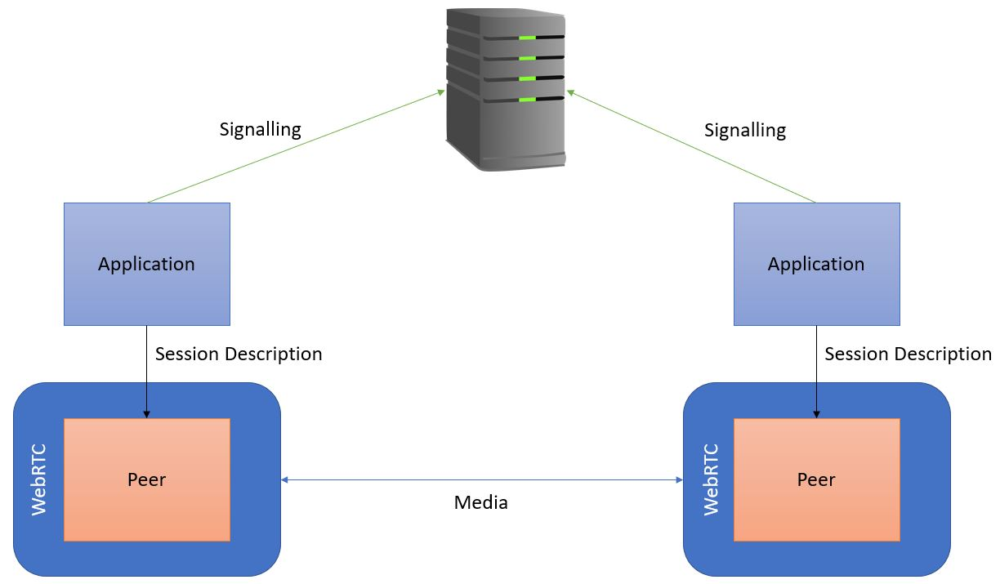
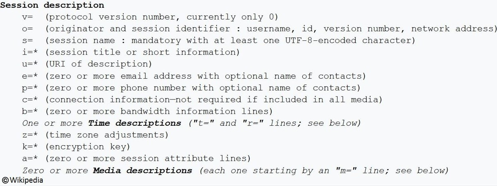
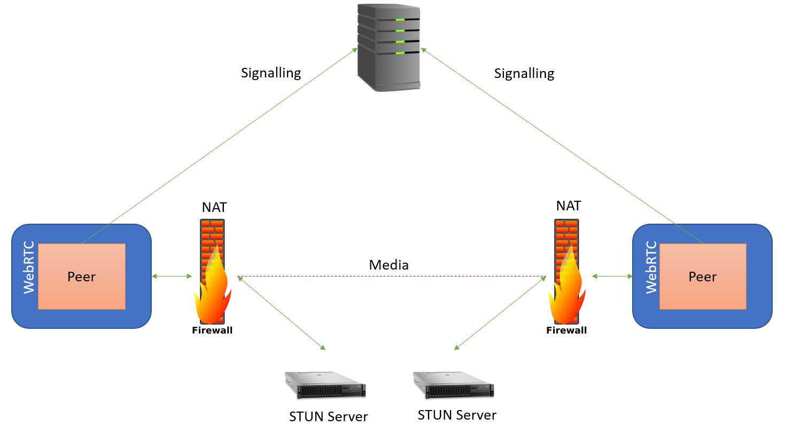
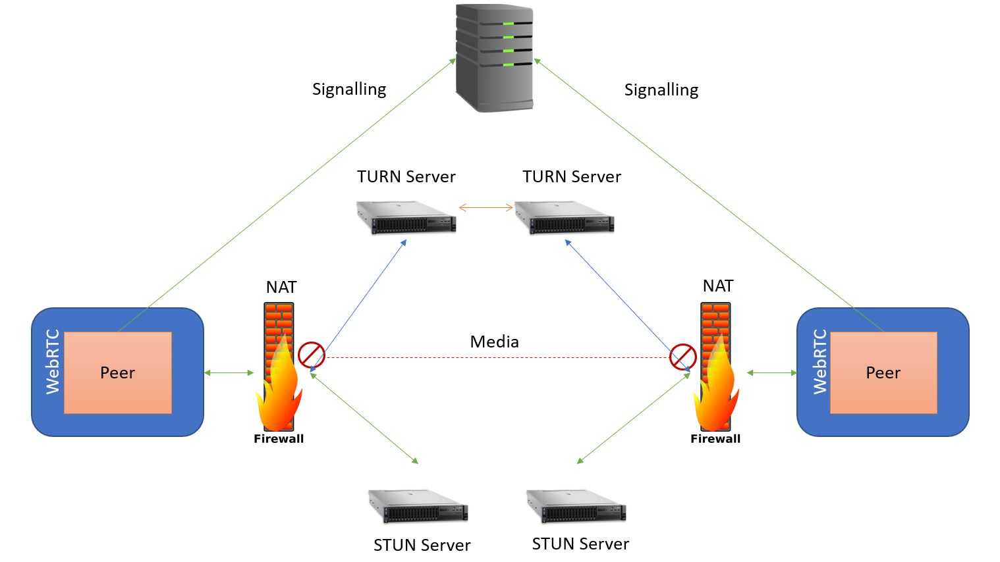

With the help of RTCPeerConnection it makes it possible to send data between peers, but without servers, the process wouldn’t be able to get started.
It’s important to make sure that both sides can agree to actually conduct the session which is known as signalling. WebRTC signalling is abstract which means there’s no fully-defined protocol on exactly how it’s done. This is done by peers exchanging session description objects. You could think of it like a telephone call, when you call someone the telephone network provider sends a message to the person you’re trying to call. Then when they answer the call, they send a message back (a response) saying that the call is now active.
These messages the network providers send also contain parameters like what media format to use and where the person is on the network. This is true for WebRTC because the session description objects contain parameters like what codecs to use, what security keys to use, and the network information for setting up the peer-to-peer route. The only important thing is that the session description is sent from either side. Any messaging mechanism can be used such as WebSockets, Google Cloud Messaging and XMLHttpRequest (XHR). Not only that but any protocol can be used such as Session Initiation Protocol (SIP), Extensible Messaging and Presence Protocol (XMPP), or even send it as JavaScript Object Notation (JSON). To visual represent how it all works I have provide a picture below.
The application gets a session description from the browser and sends it across the other side through the server. Once the other side has sent a message back with their session description and both are passed down to the WebRTC in the browser, WebRTC can then set up and conduct the media link peer-to-peer. Below is an example of what a session description looks like. Advanced applications can do complex behaviours by modifying the session description but WebRTC is designed so that regular applications don’t have to.
To get the peer session fully routed is another use of servers for WebRTC. Before the age of NAT, each peer had a public IP address which was sent to each other through the server to make a link directly between the peers. NATs hand out what’s called a private IP address which makes linking peers a little more complicated and are not useful for communication. There is no way to create a peer-to-peer link without a public IP address.
This is where the use of the Simple Traversal of UDP through NAT (STUN) server comes into play. The STUN server acts as the gatekeeper between device operating behind a NAT or firewall and a client outside of the firewall. The STUN server can be contacted from WebRTC and what happens is the peer request their public IP address from the server, it sees the address that the request came from, puts the address into a packet and sends it back. Now WebRTC knows its public IP address and the STUN server is no longer needed therefore doesn’t have to have media passing through it.
In the diagram above, each peer has contacted their STUN server to find out what their public IP address is. Then its sent the traffic to the other IP address through it’s NAT, and the data still flows peer-to-peer. The STUN is very effective, but this doesn’t work in every case which is why there is a technology called Traversal Using Relay NAT (TURN) built into WebRTC.
TURN is a cloud solution when a peer-to-peer link is impossible by asking for a public IP address. Because this public address is in the cloud, anybody can contact it which means the call always sets up, even if you’re behind a restrictive NAT or even a proxy. Disadvantages of TURN is since the data is being relayed through the server, there is an operational cost to it, adds latency eats up bandwidth, servers and CPU, but it does mean that the call works in almost all environments.
In the diagram above, STUN was used to create the peer connection but failed to do so therefore fell back and only then was TURN used. The media was then sent through the NAT to the TURN server to the other side. This process is all done by another protocol called Interactive Connectivity Establishment (ICE).
This protocol, also known as a framework, knows about both STUN and TURN and is used to find the best path and most direct way for two peers to communicate with each other. At first it will try to make a connection using the host address obtained from the devices operating system (OS) and network card. If this fails then ICE will then look to obtain an external address (public IP address) using the STUN server. In the case of that also failing, it’ll fall back to routing via a TURN relay server. ICE conduct connectivity checks to decide what path is best to set up the peer-to-peer connection. It collects all the address possible for the candidates such as the host candidates which are the local address, server reflective candidates which are obtained by the STUN servers, and the relayed candidates which are TURN server address currently working with. The collected candidates are then sent via SPD and then the client tries to connect to received candidates until it succeeds.
The disadvantage of using ICE is that it can be quite slow with 10 sod seconds delay, however a new mechanism has been added to WebRTC which speeds up the ICE process. This is called Trickle ICE and works by allowing a caller to incrementally provide candidates to the callee after the original offer has been dispatched. This mean the callee can act upon the call and setting up the ICE connection immediately without being forced to wait for the caller to gather all possible candidates resulting in a faster call start up.
{kind=link}
{kind=link}
{kind=link}
{kind=link}